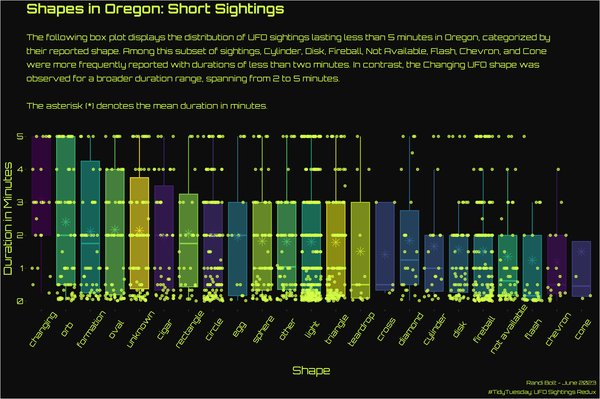

Explore the mysterious realm of unidentified flying objects as I dive into my Week 25 #TidyTuesday submission. In this otherworldly data visual I uncover intriguing patterns about sightings lasting less than 5 minutes in Oregon, all classified according to their reported shapes.
If this dataset looks familiar, that’s because we used a version of it back in 2019. The new version adds the last several years of data, adds information about time-of-day, and cleans up some errors in the original dataset. We’d love to see visualizations describing the differences between the 2019 dataset and this new dataset!
The National UFO Reporting Center was founded in 1974 by noted UFO investigator Robert J. Gribble. The Center’s primary function over the past five decades has been to receive, record, and to the greatest degree possible, corroborate and document reports from individuals who have been witness to unusual, possibly UFO-related events. Throughout its history, the Center has processed over 170,000 reports, and has distributed its information to thousands of individuals.

Code
This weeks code retains its core components of cleaning, visualizing, and styling, while the index.R file handles data loading, file execution, and the generation of a data visualization.
I utilized tidyr::replace_na() in the cleaning function to replace missing values (NA) with the string ‘not available’.
In the visualizing function, I opted to use ggplot2::geom_jitter() instead of ggplot2::geom_point() due to the nature of the data. Since the data points represent estimates of sighting durations, and they are mostly in minutes rather than specific seconds, using geom_point() would result in straight lines of dots across the box plots. Therefore, I decided to apply jittering using geom_jitter() to add some randomness to the point positions, which I deemed acceptable for visualizing the estimated sighting durations.
In the styling function, I utilized ggplot2::scale_x_discrete(limits = axis_labs) to define the order of the x-axis labels. Note that if you misspell a word, the data will not appear on your graph.
As the styling function grows longer, I find myself considering the idea of splitting it up. One approach I might explore is separating the labels into their own distinct function. This way, I can assess whether this change significantly improves the readability of the styling function.
This visual raises some concerns, and I acknowledge the need to allocate more time for statistical analysis in the future. The following issues can be identified with this visual.
Lack of statistical significance in the arrangement of UFO shapes along the x-axis: The order was chosen based on aesthetic and readability considerations, rather than any statistical criteria.
Absence of statistical analysis for outlier elimination: Since the data was limited to sightings lasting 5 minutes or less, no statistical analysis was conducted to identify and eliminate outliers.